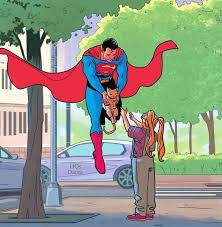
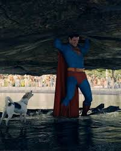
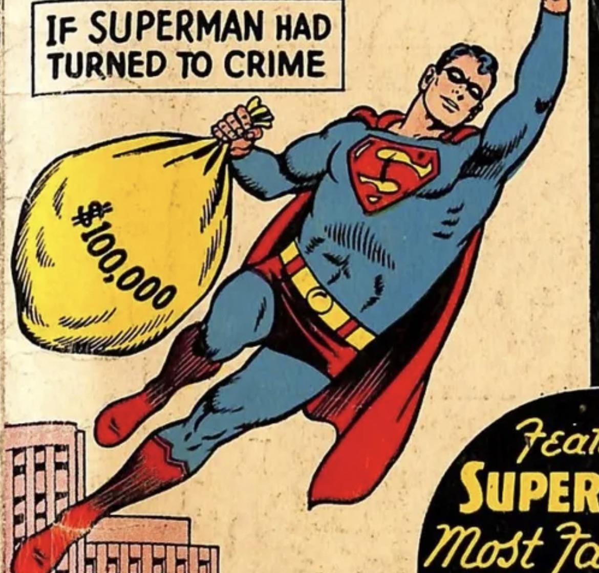
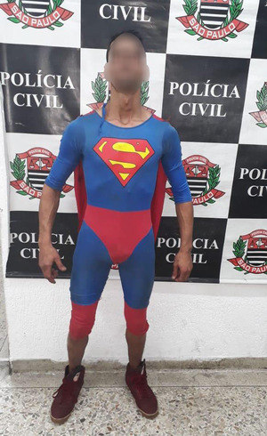

Ele é um superherói muito forte.
Conhecido mundialmente.
Últimas Notícias
21/08/2019
Superhomem salva gato em São Paulo, na capital
O nosso herói salvou um gato na cidade de São Paulo, no qual estava em cima de uma árvore e estava tendo risco de vida. A partir disso, a opinião pública sobre o Superhomem aumentou drasticamente.
Leia Mais
09/05/2022
Superhomem salva o mundo novamente, ao conseguir carregar o meteoro 22YPC que estava caindo em Joinville, no bairro Floresta
O tão aclamado herói da nação salvou novamente o mundo, noticiando ter desacelerado e carregado o meteoro para um local seguro. Dessa forma, ele é o melhor herói do mundo, recebendo aplausos de toda a população mundial
Leia Mais
12/02/2026
Superhomem vira ladrão e rouba o banco de Santander na rua Santa Catarina
O grande e tão adorado Superhomem foi flagrado roubando o banco Santander, no bairro de Santa Catarina, o qual causou diversas reações entre o público mundial, levando á reflexão de que até os melhores heróis podem passar por tempos difíceis.
Leia Mais
19/02/2026
Superhomem é preso pela polícia civíl em Joinville, no bairro Bucarein
Após uma semana de busca pelo ex-herói, o Superhomem foi finalmente capturado e levado para o Presídio Regional de Joinville, encerrando assim a caçada do homem que largou a vida de herói para entrar para o crime.
Leia Mais